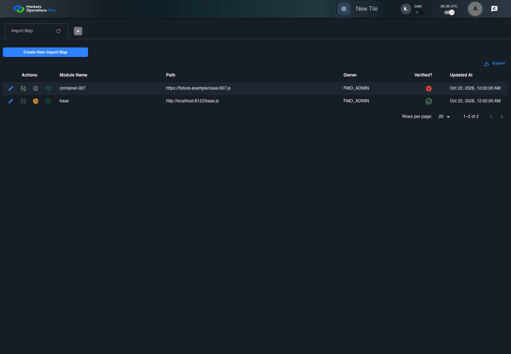
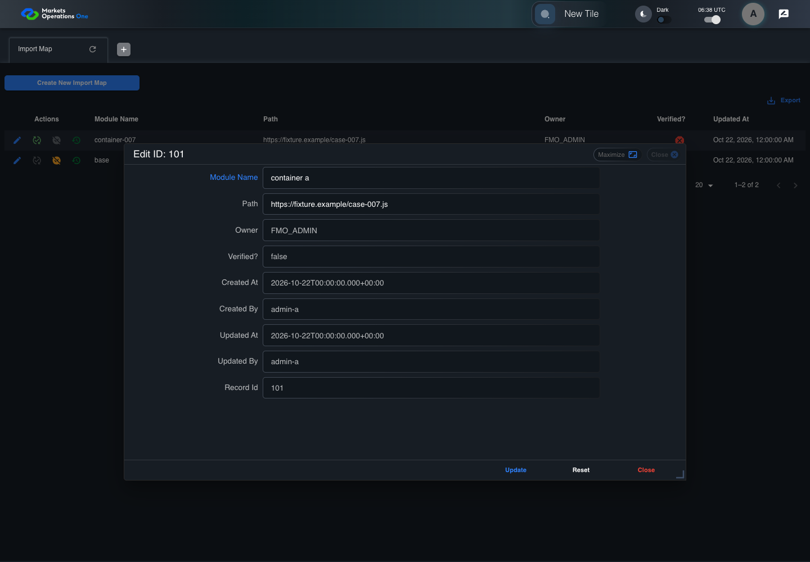
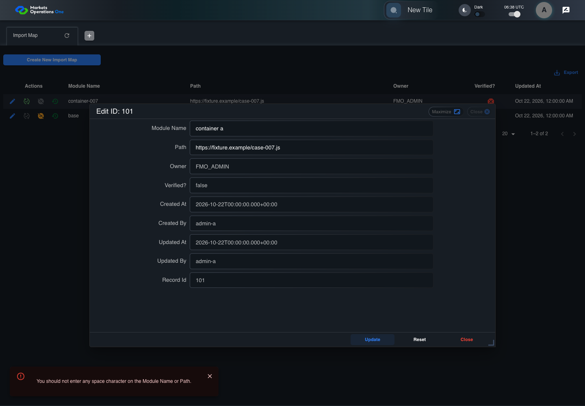
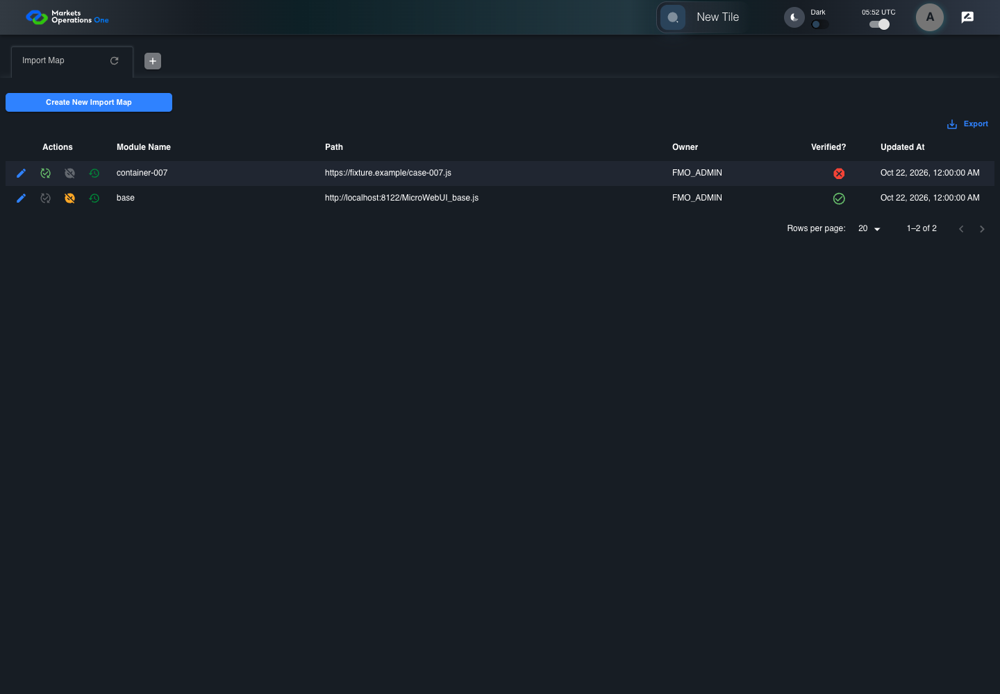

All canonical cases
BFF-ADM-007: Reject embedded spaces in Import Map Module Name on update Business acceptance remains unverified. Owner: unknown. Review the canonical definition and fixture limits before acceptance.
Latest local result: PASS Business acceptance: NOT_ESTABLISHED.
The latest local result describes execution. The historical definition review assesses the case design before execution.
Latest step screenshot evidence: COMPLETE . 13/13 canonical steps have execution screenshots.
Canonical Gherkin definition . Definition version: 2. SHA-256: b2380a714a234cb5ac628bbb8f8b3750fb0d84267b2e9daa60754ef592a973cb.
Historical definition review (preflight): UNVERIFIED A definition review FAIL can coexist with local PASS. The definition failed preflight quality checks.
This historical review does not change the latest execution result. Resolve definition gaps before business acceptance.
Canonical Gherkin steps Feature: Admin validation
@BFF-ADM-007
Scenario: Reject embedded spaces in Import Map Module Name on update
Given Admin A uses subject "admin-a" with role "FMO_ADMIN" in an isolated authenticated browser
And the controlled Import Map fixture records the initial grid rows and persisted values
And the Import Map grid has record "101" owned by "FMO_ADMIN"
And the baseline fixture data defines "Module Name" as "container-007"
And the baseline fixture data defines "Path" as "https://fixture.example/case-007.js"
When Admin A clicks the button labeled "Edit" in the Import Map grid row with "Record Id" "101"
Then the dialog titled "edit ID: 101" is visible on the Import Map administration page
When Admin A fills the textbox labeled "Module Name" with "container a" in dialog "edit ID: 101"
And Admin A fills the textbox labeled "Path" with "https://fixture.example/case-007.js" in dialog "edit ID: 101"
And Admin A clicks the button labeled "Update" in dialog "edit ID: 101"
Then the dialog titled "edit ID: 101" remains visible on the Import Map administration page
And the alert with severity "error" in the portal snackbar contains the exact text "You should not enter any space character on the Module Name or Path."
And the Import Map data grid with column "Record Id" row identifiers and loaded field values equal the initial grid snapshot on the Import Map administration page Acceptance and evidence limits: NO_COMPLETE_REAL_APPLICATION_BINDING, CANONICAL_REVIEW_OR_EVIDENCE_UNRESOLVED.
Planned essential canonical frames: 3. Plan completeness requires separate review.
Latest attempt BFF-ADM-007 current BFF administration through actual UI PASS · application/run-072/bff-adm-007-current-bff-administration-through-actual-ui-642c931701c6-attempt-1 · ACTUAL_APPLICATION_LOCAL_SERVICES
Actual current React and exact-current BFF admin controllers/services/JPA with actual migration DDL in disposable PostgreSQL. Controlled OUD/EMS2 identities and local Spring bootstrap. Fixture SQL seeds/mutates isolated records; service errors are actual database errors. Undefined agreed messages remain unresolved acceptance.
2026-10-22T06:38:54.571Z to 2026-10-22T06:38:58.374Z
Assertions and result · Artifact manifest · Exact run inputs and source hashes
Result SHA-256: a09c5b3201cb7c84f76ab0532ed53d2c398d8ec4a43819c40b6bb9ff2e0619aa Playwright trace
Machine observations Screenshot capture: CAPTURED. Named frames: 14.
Step screenshot evidence: COMPLETE. 13/13 canonical steps have execution screenshots.
Canonical step timeline Given Admin A uses subject "admin-a" with role "FMO_ADMIN" in an isolated authenticated browser

1. step-01 Visible state after step 1: Given Admin A uses subject "admin-a" with role "FMO_ADMIN" in an isolated authenticated browser
2026-10-22T06:38:56.160Z · 1440×1000474fa048a678611cf8e24fbac7b99bd82a9dd3fd958e3fffa6a04bad1d633e11 And the controlled Import Map fixture records the initial grid rows and persisted values
2. step-02 Visible state after step 2: And the controlled Import Map fixture records the initial grid rows and persisted values
2026-10-22T06:38:56.273Z · 1440×1000474fa048a678611cf8e24fbac7b99bd82a9dd3fd958e3fffa6a04bad1d633e11 And the Import Map grid has record "101" owned by "FMO_ADMIN"
3. step-03 Visible state after step 3: And the Import Map grid has record "101" owned by "FMO_ADMIN"
2026-10-22T06:38:56.328Z · 1440×1000474fa048a678611cf8e24fbac7b99bd82a9dd3fd958e3fffa6a04bad1d633e11 And the baseline fixture data defines "Module Name" as "container-007"
4. step-04 Visible state after step 4: And the baseline fixture data defines "Module Name" as "container-007"
2026-10-22T06:38:56.374Z · 1440×1000474fa048a678611cf8e24fbac7b99bd82a9dd3fd958e3fffa6a04bad1d633e11 And the baseline fixture data defines "Path" as "https://fixture.example/case-007.js"
5. step-05 Visible state after step 5: And the baseline fixture data defines "Path" as "https://fixture.example/case-007.js"
2026-10-22T06:38:56.422Z · 1440×1000df5e9395866d96f2629666b6d13de95716cf9728e05d2e4848dc7386a97351a3 When Admin A clicks the button labeled "Edit" in the Import Map grid row with "Record Id" "101"
6. step-06 Visible state after step 6: When Admin A clicks the button labeled "Edit" in the Import Map grid row with "Record Id" "101"
2026-10-22T06:38:56.654Z · 1440×10004752aa506b99891206e7214b040f363a5010fdf1beaf384b111f455dc17a4410 Then the dialog titled "edit ID: 101" is visible on the Import Map administration page
7. step-07 Visible state after step 7: Then the dialog titled "edit ID: 101" is visible on the Import Map administration page
2026-10-22T06:38:56.710Z · 1440×100066968985a8a8d04a413eb2e218f63b4f120a2cc636f2b521941bb5de7cbeb41d When Admin A fills the textbox labeled "Module Name" with "container a" in dialog "edit ID: 101"

8. step-08 Visible state after step 8: When Admin A fills the textbox labeled "Module Name" with "container a" in dialog "edit ID: 101"
2026-10-22T06:38:57.131Z · 1440×1000285819e8c67892f832479417afd32ac7dab70609d791343e05a727b1d7f9e31a And Admin A fills the textbox labeled "Path" with "https://fixture.example/case-007.js" in dialog "edit ID: 101"
9. step-09 Visible state after step 9: And Admin A fills the textbox labeled "Path" with "https://fixture.example/case-007.js" in dialog "edit ID: 101"
2026-10-22T06:38:57.556Z · 1440×1000120d660f9403ab5b0dec8ab6981ae459d67a31f1d079d5d19c18197b98dba55e And Admin A clicks the button labeled "Update" in dialog "edit ID: 101"

10. step-10 Visible state after step 10: And Admin A clicks the button labeled "Update" in dialog "edit ID: 101"
2026-10-22T06:38:57.811Z · 1440×10001f913931b6014f572e47b0923b0dfe9fb8efbd990d51f3ec238525c533461c35 Then the dialog titled "edit ID: 101" remains visible on the Import Map administration page
11. step-11 Visible state after step 11: Then the dialog titled "edit ID: 101" remains visible on the Import Map administration page
2026-10-22T06:38:57.867Z · 1440×1000edc675e81ec7d482d69fa4252ed4755582924f4b5e0f1bd9ef9712e148e43b6f And the alert with severity "error" in the portal snackbar contains the exact text "You should not enter any space character on the Module Name or Path."
12. step-12 Visible state after step 12: And the alert with severity "error" in the portal snackbar contains the exact text "You should not enter any space character on the Module Name or Path."
2026-10-22T06:38:57.918Z · 1440×1000edc675e81ec7d482d69fa4252ed4755582924f4b5e0f1bd9ef9712e148e43b6f And the Import Map data grid with column "Record Id" row identifiers and loaded field values equal the initial grid snapshot on the Import Map administration page
13. step-13 Visible state after step 13: And the Import Map data grid with column "Record Id" row identifiers and loaded field values equal the initial grid snapshot on the Import Map administration page
2026-10-22T06:38:58.031Z · 1440×1000edc675e81ec7d482d69fa4252ed4755582924f4b5e0f1bd9ef9712e148e43b6f Additional named frames 14. final-result The final visible state after the named test assertions.
2026-10-22T06:38:58.110Z · 1440×1000edc675e81ec7d482d69fa4252ed4755582924f4b5e0f1bd9ef9712e148e43b6f Screenshots establish visible state only. Assertions and traces support functional claims.
Earlier attempt history (3) Earlier attempt PASS (superseded by latest PASS) BFF-ADM-007 current BFF administration through actual UI PASS · application/run-066/bff-adm-007-current-bff-administration-through-actual-ui-642c931701c6-attempt-1 · ACTUAL_APPLICATION_LOCAL_SERVICES
Actual current React and exact-current BFF admin controllers/services/JPA with actual migration DDL in disposable PostgreSQL. Controlled OUD/EMS2 identities and local Spring bootstrap. Fixture SQL seeds/mutates isolated records; service errors are actual database errors. Undefined agreed messages remain unresolved acceptance.
2026-10-22T06:20:26.263Z to 2026-10-22T06:20:30.602Z
Assertions and result · Artifact manifest · Exact run inputs and source hashes
Result SHA-256: 8822ddf81408722a89205483548d7a129d584b48a512cd518ea57922101979ea Playwright trace
Machine observations Screenshot capture: CAPTURED. Named frames: 14.
Step screenshot evidence: COMPLETE. 13/13 canonical steps have execution screenshots.
Canonical step timeline Given Admin A uses subject "admin-a" with role "FMO_ADMIN" in an isolated authenticated browser
1. step-01 Visible state after step 1: Given Admin A uses subject "admin-a" with role "FMO_ADMIN" in an isolated authenticated browser
2026-10-22T06:20:28.550Z · 1440×1000dfc772368b24fb0f4e37f4f84dd1e9cf64bedbb4fa276a3b0df924ebea1a8621 And the controlled Import Map fixture records the initial grid rows and persisted values
2. step-02 Visible state after step 2: And the controlled Import Map fixture records the initial grid rows and persisted values
2026-10-22T06:20:28.666Z · 1440×1000dfc772368b24fb0f4e37f4f84dd1e9cf64bedbb4fa276a3b0df924ebea1a8621 And the Import Map grid has record "101" owned by "FMO_ADMIN"
3. step-03 Visible state after step 3: And the Import Map grid has record "101" owned by "FMO_ADMIN"
2026-10-22T06:20:28.699Z · 1440×1000e5b0f0cef2b980d0cf761b5e5369946902b52d01915fe386a67b07f53eb48db8 And the baseline fixture data defines "Module Name" as "container-007"
4. step-04 Visible state after step 4: And the baseline fixture data defines "Module Name" as "container-007"
2026-10-22T06:20:28.748Z · 1440×1000dfc772368b24fb0f4e37f4f84dd1e9cf64bedbb4fa276a3b0df924ebea1a8621 And the baseline fixture data defines "Path" as "https://fixture.example/case-007.js"
5. step-05 Visible state after step 5: And the baseline fixture data defines "Path" as "https://fixture.example/case-007.js"
2026-10-22T06:20:28.782Z · 1440×1000e5b0f0cef2b980d0cf761b5e5369946902b52d01915fe386a67b07f53eb48db8 When Admin A clicks the button labeled "Edit" in the Import Map grid row with "Record Id" "101"
6. step-06 Visible state after step 6: When Admin A clicks the button labeled "Edit" in the Import Map grid row with "Record Id" "101"
2026-10-22T06:20:28.973Z · 1440×1000001f8fc63109dd228087f5449c6c7b07a70e270d2f98c53871fcda7565644241 Then the dialog titled "edit ID: 101" is visible on the Import Map administration page
7. step-07 Visible state after step 7: Then the dialog titled "edit ID: 101" is visible on the Import Map administration page
2026-10-22T06:20:29.020Z · 1440×10004da82747ab7f87487a46b9be2820147732f4fa64117b41e6e0911fa4db1849cf When Admin A fills the textbox labeled "Module Name" with "container a" in dialog "edit ID: 101"
8. step-08 Visible state after step 8: When Admin A fills the textbox labeled "Module Name" with "container a" in dialog "edit ID: 101"
2026-10-22T06:20:29.422Z · 1440×1000456d6062785ade0d43ab0b9acba599a2b9319132c06fa70221558eda59180d4d And Admin A fills the textbox labeled "Path" with "https://fixture.example/case-007.js" in dialog "edit ID: 101"
9. step-09 Visible state after step 9: And Admin A fills the textbox labeled "Path" with "https://fixture.example/case-007.js" in dialog "edit ID: 101"
2026-10-22T06:20:29.843Z · 1440×1000e2742939969176767cda658bc2777889e7aa92a951da9f11698a2e5f7dcede82 And Admin A clicks the button labeled "Update" in dialog "edit ID: 101"
10. step-10 Visible state after step 10: And Admin A clicks the button labeled "Update" in dialog "edit ID: 101"
2026-10-22T06:20:30.089Z · 1440×1000886bae6c9236e2a251c34f3867b0a87126028a445ddb7895022a4441dd2207d6 Then the dialog titled "edit ID: 101" remains visible on the Import Map administration page
11. step-11 Visible state after step 11: Then the dialog titled "edit ID: 101" remains visible on the Import Map administration page
2026-10-22T06:20:30.137Z · 1440×10002c6ec307dd4d9db340d34726d5e08364faaef3e1d544cd7de717f5d738baef6b And the alert with severity "error" in the portal snackbar contains the exact text "You should not enter any space character on the Module Name or Path."
12. step-12 Visible state after step 12: And the alert with severity "error" in the portal snackbar contains the exact text "You should not enter any space character on the Module Name or Path."
2026-10-22T06:20:30.186Z · 1440×10002c6ec307dd4d9db340d34726d5e08364faaef3e1d544cd7de717f5d738baef6b And the Import Map data grid with column "Record Id" row identifiers and loaded field values equal the initial grid snapshot on the Import Map administration page
13. step-13 Visible state after step 13: And the Import Map data grid with column "Record Id" row identifiers and loaded field values equal the initial grid snapshot on the Import Map administration page
2026-10-22T06:20:30.287Z · 1440×10002c6ec307dd4d9db340d34726d5e08364faaef3e1d544cd7de717f5d738baef6b Additional named frames 14. final-result The final visible state after the named test assertions.
2026-10-22T06:20:30.354Z · 1440×10002c6ec307dd4d9db340d34726d5e08364faaef3e1d544cd7de717f5d738baef6b Screenshots establish visible state only. Assertions and traces support functional claims.
Earlier attempt PASS (superseded by latest PASS) BFF-ADM-007 current BFF administration through actual UI PASS · application/run-062/bff-adm-007-current-bff-administration-through-actual-ui-642c931701c6-attempt-1 · ACTUAL_APPLICATION_LOCAL_SERVICES
Actual current React and exact-current BFF admin controllers/services/JPA with actual migration DDL in disposable PostgreSQL. Controlled OUD/EMS2 identities and local Spring bootstrap. Fixture SQL seeds/mutates isolated records; service errors are actual database errors. Undefined agreed messages remain unresolved acceptance.
2026-10-22T05:56:12.171Z to 2026-10-22T05:56:15.592Z
Assertions and result · Artifact manifest · Exact run inputs and source hashes
Result SHA-256: b72b9e6791a1715bc7d075bd135b4351cc9f8dd054e2eb9f9351945f06326383 Playwright trace
Machine observations Screenshot capture: CAPTURED. Named frames: 14.
Step screenshot evidence: COMPLETE. 13/13 canonical steps have execution screenshots.
Canonical step timeline Given Admin A uses subject "admin-a" with role "FMO_ADMIN" in an isolated authenticated browser
1. step-01 Visible state after step 1: Given Admin A uses subject "admin-a" with role "FMO_ADMIN" in an isolated authenticated browser
2026-10-22T05:56:13.612Z · 1440×1000d0b17dd556578ae714122b989fa5e2ecbc9c3c0bc6135cdb2f522d24f39f7c54 And the controlled Import Map fixture records the initial grid rows and persisted values
2. step-02 Visible state after step 2: And the controlled Import Map fixture records the initial grid rows and persisted values
2026-10-22T05:56:13.729Z · 1440×1000d0b17dd556578ae714122b989fa5e2ecbc9c3c0bc6135cdb2f522d24f39f7c54 And the Import Map grid has record "101" owned by "FMO_ADMIN"
3. step-03 Visible state after step 3: And the Import Map grid has record "101" owned by "FMO_ADMIN"
2026-10-22T05:56:13.762Z · 1440×1000ea5ba333e81185e12f0eaa42a01ef8fbe330800691572662c3363ba6fe69e7e5 And the baseline fixture data defines "Module Name" as "container-007"
4. step-04 Visible state after step 4: And the baseline fixture data defines "Module Name" as "container-007"
2026-10-22T05:56:13.794Z · 1440×1000d0b17dd556578ae714122b989fa5e2ecbc9c3c0bc6135cdb2f522d24f39f7c54 And the baseline fixture data defines "Path" as "https://fixture.example/case-007.js"
5. step-05 Visible state after step 5: And the baseline fixture data defines "Path" as "https://fixture.example/case-007.js"
2026-10-22T05:56:13.827Z · 1440×1000ea5ba333e81185e12f0eaa42a01ef8fbe330800691572662c3363ba6fe69e7e5 When Admin A clicks the button labeled "Edit" in the Import Map grid row with "Record Id" "101"
6. step-06 Visible state after step 6: When Admin A clicks the button labeled "Edit" in the Import Map grid row with "Record Id" "101"
2026-10-22T05:56:14.018Z · 1440×1000d5b85cc30ab34dc0e382e4a9f0ea6405e7f39b92f3b659c539babe16695f1578 Then the dialog titled "edit ID: 101" is visible on the Import Map administration page
7. step-07 Visible state after step 7: Then the dialog titled "edit ID: 101" is visible on the Import Map administration page
2026-10-22T05:56:14.065Z · 1440×1000c63b72d0dcedc34ca1ee82df3fbe17553f3be96af51b929ccf770d117e078e77 When Admin A fills the textbox labeled "Module Name" with "container a" in dialog "edit ID: 101"
8. step-08 Visible state after step 8: When Admin A fills the textbox labeled "Module Name" with "container a" in dialog "edit ID: 101"
2026-10-22T05:56:14.434Z · 1440×1000827d82431808e86a95fbc90466101965d15aa7544813feef2dc35cbc7bfdfe74 And Admin A fills the textbox labeled "Path" with "https://fixture.example/case-007.js" in dialog "edit ID: 101"
9. step-09 Visible state after step 9: And Admin A fills the textbox labeled "Path" with "https://fixture.example/case-007.js" in dialog "edit ID: 101"
2026-10-22T05:56:14.808Z · 1440×1000eb03b3e76eea585de3d06800c60aab214c51039d5a49099c57c8747ee9e1c237 And Admin A clicks the button labeled "Update" in dialog "edit ID: 101"
10. step-10 Visible state after step 10: And Admin A clicks the button labeled "Update" in dialog "edit ID: 101"
2026-10-22T05:56:15.052Z · 1440×1000d28414ba0222768a7656f84686a6a35e648ed7f2fd731c6ad5b7ebb55f91729d Then the dialog titled "edit ID: 101" remains visible on the Import Map administration page
11. step-11 Visible state after step 11: Then the dialog titled "edit ID: 101" remains visible on the Import Map administration page
2026-10-22T05:56:15.098Z · 1440×1000ded98d886666d0d95ca6af86516e3676b7733b6fe210cf77f01b3e0daa8ddffc And the alert with severity "error" in the portal snackbar contains the exact text "You should not enter any space character on the Module Name or Path."
12. step-12 Visible state after step 12: And the alert with severity "error" in the portal snackbar contains the exact text "You should not enter any space character on the Module Name or Path."
2026-10-22T05:56:15.149Z · 1440×1000ded98d886666d0d95ca6af86516e3676b7733b6fe210cf77f01b3e0daa8ddffc And the Import Map data grid with column "Record Id" row identifiers and loaded field values equal the initial grid snapshot on the Import Map administration page
13. step-13 Visible state after step 13: And the Import Map data grid with column "Record Id" row identifiers and loaded field values equal the initial grid snapshot on the Import Map administration page
2026-10-22T05:56:15.270Z · 1440×1000ded98d886666d0d95ca6af86516e3676b7733b6fe210cf77f01b3e0daa8ddffc Additional named frames 14. final-result The final visible state after the named test assertions.
2026-10-22T05:56:15.349Z · 1440×1000ded98d886666d0d95ca6af86516e3676b7733b6fe210cf77f01b3e0daa8ddffc Screenshots establish visible state only. Assertions and traces support functional claims.
Earlier attempt PASS (superseded by latest PASS) BFF-ADM-007 current BFF administration through actual UI PASS · application/run-061/bff-adm-007-current-bff-administration-through-actual-ui-642c931701c6-attempt-1 · ACTUAL_APPLICATION_LOCAL_SERVICES
Actual current React and exact-current BFF admin controllers/services/JPA with actual migration DDL in disposable PostgreSQL. Controlled OUD/EMS2 identities and local Spring bootstrap. Fixture SQL seeds/mutates isolated records; service errors are actual database errors. Undefined agreed messages remain unresolved acceptance.
2026-10-22T05:52:36.799Z to 2026-10-22T05:52:40.216Z
Assertions and result · Artifact manifest · Exact run inputs and source hashes
Result SHA-256: 08634294c5ae22b2c15aea33f0bb83d32adcea57cb4c63fded20d58f1d617f8c Playwright trace
Machine observations Screenshot capture: CAPTURED. Named frames: 14.
Step screenshot evidence: COMPLETE. 13/13 canonical steps have execution screenshots.
Canonical step timeline Given Admin A uses subject "admin-a" with role "FMO_ADMIN" in an isolated authenticated browser
1. step-01 Visible state after step 1: Given Admin A uses subject "admin-a" with role "FMO_ADMIN" in an isolated authenticated browser
2026-10-22T05:52:38.274Z · 1440×1000829ca930caf609028a8143d95d3d3c8542c487809af8e8d612f62aafb03cb6a4 And the controlled Import Map fixture records the initial grid rows and persisted values
2. step-02 Visible state after step 2: And the controlled Import Map fixture records the initial grid rows and persisted values
2026-10-22T05:52:38.390Z · 1440×1000829ca930caf609028a8143d95d3d3c8542c487809af8e8d612f62aafb03cb6a4 And the Import Map grid has record "101" owned by "FMO_ADMIN"
3. step-03 Visible state after step 3: And the Import Map grid has record "101" owned by "FMO_ADMIN"
2026-10-22T05:52:38.421Z · 1440×1000c1d6c83b80a556e46e9961cf98a8098d30765b1b8397879ae368698b1f4b335b And the baseline fixture data defines "Module Name" as "container-007"
4. step-04 Visible state after step 4: And the baseline fixture data defines "Module Name" as "container-007"
2026-10-22T05:52:38.454Z · 1440×1000829ca930caf609028a8143d95d3d3c8542c487809af8e8d612f62aafb03cb6a4 And the baseline fixture data defines "Path" as "https://fixture.example/case-007.js"

5. step-05 Visible state after step 5: And the baseline fixture data defines "Path" as "https://fixture.example/case-007.js"
2026-10-22T05:52:38.487Z · 1440×1000c1d6c83b80a556e46e9961cf98a8098d30765b1b8397879ae368698b1f4b335b When Admin A clicks the button labeled "Edit" in the Import Map grid row with "Record Id" "101"
6. step-06 Visible state after step 6: When Admin A clicks the button labeled "Edit" in the Import Map grid row with "Record Id" "101"
2026-10-22T05:52:38.678Z · 1440×1000d68b1b6cea7c3d1d434c6389d7b012692cd5a85f8d5b8b45ecfde4afbbef88c5 Then the dialog titled "edit ID: 101" is visible on the Import Map administration page
7. step-07 Visible state after step 7: Then the dialog titled "edit ID: 101" is visible on the Import Map administration page
2026-10-22T05:52:38.724Z · 1440×1000607224f59f1f88787c3c5d39b7c3a53da86b80b00f8af0915eac77d25b2df311 When Admin A fills the textbox labeled "Module Name" with "container a" in dialog "edit ID: 101"
8. step-08 Visible state after step 8: When Admin A fills the textbox labeled "Module Name" with "container a" in dialog "edit ID: 101"
2026-10-22T05:52:39.095Z · 1440×1000d0b7ca9ff9d6191bd2c1416b73b52b96bf0bc9c29567e7fe1e6edafef984b346 And Admin A fills the textbox labeled "Path" with "https://fixture.example/case-007.js" in dialog "edit ID: 101"
9. step-09 Visible state after step 9: And Admin A fills the textbox labeled "Path" with "https://fixture.example/case-007.js" in dialog "edit ID: 101"
2026-10-22T05:52:39.466Z · 1440×1000b156732a1865ab21a5d450de7bad23ac141e9291506f24709e49e99d8bf02342 And Admin A clicks the button labeled "Update" in dialog "edit ID: 101"
10. step-10 Visible state after step 10: And Admin A clicks the button labeled "Update" in dialog "edit ID: 101"
2026-10-22T05:52:39.711Z · 1440×10006fb689944d70b265ca59e3a285550b4ed3d05c40eb88bd8ede0b72d91357206a Then the dialog titled "edit ID: 101" remains visible on the Import Map administration page
11. step-11 Visible state after step 11: Then the dialog titled "edit ID: 101" remains visible on the Import Map administration page
2026-10-22T05:52:39.759Z · 1440×10006b8271d70cae4ccfe5f8af0f1e53764b62b8def649b4b7649264938195c28118 And the alert with severity "error" in the portal snackbar contains the exact text "You should not enter any space character on the Module Name or Path."
12. step-12 Visible state after step 12: And the alert with severity "error" in the portal snackbar contains the exact text "You should not enter any space character on the Module Name or Path."
2026-10-22T05:52:39.809Z · 1440×10006b8271d70cae4ccfe5f8af0f1e53764b62b8def649b4b7649264938195c28118 And the Import Map data grid with column "Record Id" row identifiers and loaded field values equal the initial grid snapshot on the Import Map administration page
13. step-13 Visible state after step 13: And the Import Map data grid with column "Record Id" row identifiers and loaded field values equal the initial grid snapshot on the Import Map administration page
2026-10-22T05:52:39.909Z · 1440×10006b8271d70cae4ccfe5f8af0f1e53764b62b8def649b4b7649264938195c28118 Additional named frames 14. final-result The final visible state after the named test assertions.
2026-10-22T05:52:39.975Z · 1440×10006b8271d70cae4ccfe5f8af0f1e53764b62b8def649b4b7649264938195c28118 Screenshots establish visible state only. Assertions and traces support functional claims.